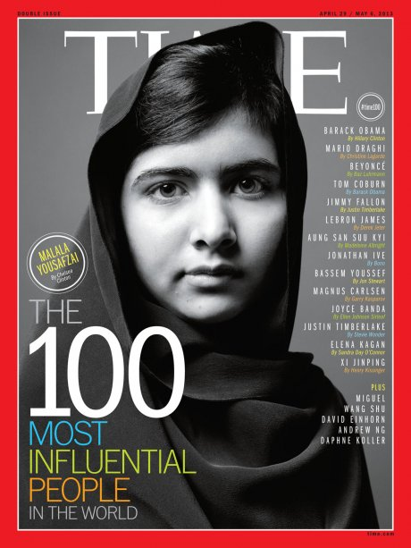

Nació el 12 de julio de 1997 en Mingora, Pakistán. Se desarrolla como activista, estudiante y bloguera.
En el 2014 es acreedora al Nobel de la Paz,
siendo la persona más joven que recibe tal premio en cualquiera de sus categorías

Frases de Malala:
Para hacerme poderosa solo necesito una cosa: educación.
Hagamos ahora nuestro futuro, y hagamos que nuestros sueños sean la realidad del mañana